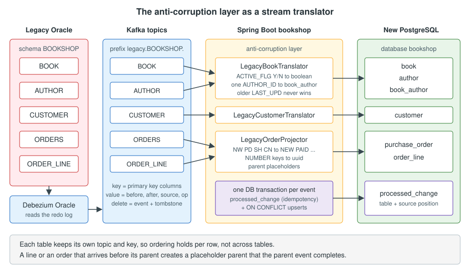

Listening to Change Events in Applications
|
This content was generated with the assistance of AI and should be verified against the official documentation before being relied on in production. |
The JDBC Sink Connector copies a legacy table into a table of the
same shape. That is enough for the Bookshop tables that keep their structure (BOOK, AUTHOR and SUPPLIER_CATALOGUE
are mirrored into legacy_book, legacy_author and legacy_supplier_catalogue). It is not enough for the tables
whose meaning changes on the way to the new model. A legacy CUSTOMER row with a NUMBER key and a one-letter status
becomes a customer row with a uuid key and a readable status. A legacy ORDERS row and its ORDER_LINE rows
become one purchase_order aggregate. A legacy BOOK with exactly one AUTHOR_ID becomes a book with any number
of authors through book_author. That translation is business logic, so it belongs in the new application, and
the new application has to listen to the change events itself.
This page builds that listener: the anti-corruption layer of the Bookshop migration, written as three Spring Boot
components that consume the legacy.BOOKSHOP.* topics and write the new PostgreSQL model. The pattern itself is
described in Migration
Path: From a Legacy Stack to a Modern One. This page shows how to implement it on top of Debezium events. It covers:
-
what a consumer receives from the Oracle connector, and which source settings the consumer depends on;
-
a Java record for the Debezium envelope and the conversion of legacy values (codes, flags,
DATE,NUMBER); -
idempotent writes: a
processed_changetable keyed by the source position, plusON CONFLICTupserts; -
ordering per key, deletes and tombstones, and keeping
ORDER_LINErows consistent with theirORDERSrow; -
error handling with blocking retries and dead-letter topics;
-
the same consumer with Avro and Apicurio Registry, with Quarkus and SmallRye Reactive Messaging, and with Kafka Streams for building aggregates.

The Worked Example: Oracle to PostgreSQL runs these classes in the complete Docker Compose stack.
Checked on 2026-11-09 against Debezium 3.7.1.Final, with Spring Boot 4.1.2 (Spring for Apache Kafka 4.1.2, Jackson
3.1, Kafka clients 4.2), Java 21, PostgreSQL 18 and Quarkus 3.40.1. All the Java code on this page was compiled against
the released jars. The Spring Boot application was also run against Kafka (the quay.io/debezium/kafka:3.7.1.Final
image) and PostgreSQL 18 in Docker on 2026-11-09, fed with hand-written events in the documented Oracle connector
format (not with a live Oracle connector), and the results in Verifying the consumer come from that run. The
Quarkus and Kafka Streams classes were compiled but not run, and the Avro configuration was not run.
When a sink connector is not enough
A sink connector and an application consumer read the same topics. The difference is where the mapping lives and how much of it there is.
| Concern | JDBC sink connector | Application consumer (this page) |
|---|---|---|
Table shape |
One topic to one table, same columns (renaming is possible with transformations) |
Any shape: one legacy row to several tables, several legacy tables to one aggregate |
Keys |
Taken from the record key or value as they are |
Can be translated, for example a |
Value mapping |
Type mapping only |
Business rules: status codes, flags, time zones, defaults, validation |
Code to maintain |
None (configuration) |
A small service, with tests |
Delivery |
At least once, idempotent with |
At least once; you write the idempotency yourself |
Typical Bookshop use |
|
|
Both can run at the same time on the same topics, in different consumer groups. A mirror table is useful even when the real target is remodelled, because it lets you compare the legacy data with the translated data, as explained in Verification & Reconciliation.
What the consumer receives
The bookshop-oracle-source connector writes one topic per captured table, named
<topic.prefix>.<schema>.<table>: legacy.BOOKSHOP.BOOK, legacy.BOOKSHOP.AUTHOR, legacy.BOOKSHOP.CUSTOMER,
legacy.BOOKSHOP.ORDERS, legacy.BOOKSHOP.ORDER_LINE and legacy.BOOKSHOP.SUPPLIER_CATALOGUE. The application
consumes the first five; SUPPLIER_CATALOGUE keeps its shape and only feeds the legacy_supplier_catalogue mirror of
the JDBC sink. Each record has:
-
a key with the primary key columns of the row, for example
{"ORDER_ID":"1001"}or{"ORDER_ID":"1001","LINE_NO":"2"}for the composite key ofORDER_LINE. The numbers are JSON strings because the source usesdecimal.handling.mode=string(see below). Kafka hashes the key to choose the partition, so all the changes of one row land in the same partition, in commit order; -
a value, the Debezium envelope:
op(ccreate,uupdate,ddelete,rread by a snapshot,ttruncate,mmessage),beforeandafter(the row before and after the change),source(where the change comes from: the SCN, the commit SCN, the transaction id, the schema and the table) and, when transaction metadata is enabled,transaction; -
for a delete, two records: the delete event (
op=d, withbeforefilled in andafternull), then a tombstone, a record with the same key and a null value. Tombstones exist so that log compaction can remove all the records of a deleted key. A consumer must accept them and do nothing.
The JSON converter of the Bookshop source embeds the schema, so both the key and the value arrive wrapped as
{"schema":{...},"payload":{...}}; the envelope is the payload part. The structure is explained field by field in
Anatomy of a Change Event. An update of an order, as the consumer
sees it (the schema part, which describes every field, is shortened here), looks like this:
{
"schema": { "type": "struct", "name": "legacy.BOOKSHOP.ORDERS.Envelope", "optional": false, "fields": [ ] },
"payload": {
"before": {
"ORDER_ID": "1001", "CUST_ID": "7", "ORDER_DT": 1794219240000, "STATUS_CD": "NW", "TOTAL_AMT": "39.80"
},
"after": {
"ORDER_ID": "1001", "CUST_ID": "7", "ORDER_DT": 1794219240000, "STATUS_CD": "PD", "TOTAL_AMT": "39.80"
},
"source": {
"version": "3.7.1.Final",
"connector": "oracle",
"name": "legacy",
"ts_ms": 1794219300000,
"snapshot": "false",
"db": "FREEPDB1",
"schema": "BOOKSHOP",
"table": "ORDERS",
"txId": "0a001b00c3000000",
"scn": "5000",
"commit_scn": "5001"
},
"op": "u",
"ts_ms": 1794219301000,
"transaction": {
"id": "0a001b00c3000000",
"total_order": 1,
"data_collection_order": 1
}
}
}Reference: Debezium — Oracle connector update events
The real schema part lists every field with its type, and the real source block has more fields
(commit_ts_ms, start_scn, rs_id, ssn, redo_thread, user_name, row_id and others). The record type below
ignores the ones it does not use, so a new field in a later Debezium release does not break the consumer.
Source connector settings the consumer depends on
The consumer code makes four assumptions about the source connector. They are part of the contract between the pipeline and the application, so write them down next to the connector configuration:
{
"key.converter": "org.apache.kafka.connect.json.JsonConverter",
"key.converter.schemas.enable": "true",
"value.converter": "org.apache.kafka.connect.json.JsonConverter",
"value.converter.schemas.enable": "true",
"decimal.handling.mode": "string",
"provide.transaction.metadata": "true",
"tombstones.on.delete": "true"
}Reference: Debezium — Oracle connector properties
-
JSON with schemas. Each key and value carries its schema next to the data, as
{"schema":...,"payload":...}. The application does not need the schema, but the JDBC sink that reads the same topics does: without it the sink cannot recognise the Debezium envelope, staysRUNNINGand skips every record with "isn’t a Debezium record". So the topics keep schemas, and the reader below takes thepayloadpart (it also accepts a bare envelope, which is what a pipeline withschemas.enable=falsewould produce). With Avro, see Avro and Apicurio Registry. -
decimal.handling.mode=string. The defaultprecisemode encodesNUMBER(10,2)as a Kafka ConnectDecimal, which the JSON converter writes as Base64 bytes (the schema holds the scale, but the consumer would have to decode them). The string mode gives"39.80", which converts toBigDecimalwithout losing precision. The Oracle connector applies this mode to everyNUMBERcolumn, not only to the decimal ones:NUMBER(10)andNUMBER(12)columns, including the key columns, also arrive as strings ("ORDER_ID":"1001"). The consumer parses them withLong.valueOf. The type rules are in Data Types & Precision. -
provide.transaction.metadata=true. It adds thetransactionblock to every event and publishesBEGINandENDevents to thelegacy.transactiontopic. The consumer uses the transaction id and the event’s position in the transaction as its idempotency key, and theENDevents can be used to check that an order is complete (see Keeping order lines consistent with their order). -
tombstones.on.delete=true(the default). The consumer ignores tombstones, but the mirror topics need them for compaction.
The complete connector is on the Oracle Connector page.
The tables the consumer writes
The anti-corruption layer writes the new model and one bookkeeping table. In the real application these tables are
created by the schema migration tool of the new application (see
Evolving the Database Model). The DDL is shown here because the consumer’s
behaviour depends on three details of it: the deterministic uuid keys, the columns that are nullable so that a parent
row can exist before its event arrives, and ON DELETE CASCADE from order_line to purchase_order.
CREATE TABLE author (
id bigint PRIMARY KEY,
full_name text
);
CREATE TABLE book (
id bigint PRIMARY KEY,
isbn text,
title text,
price numeric(12,2),
currency char(3),
published_on date,
active boolean,
supplier_id bigint,
updated_at timestamptz
);
CREATE TABLE book_author (
book_id bigint NOT NULL REFERENCES book (id) ON DELETE CASCADE,
author_id bigint NOT NULL REFERENCES author (id),
PRIMARY KEY (book_id, author_id)
);
CREATE TABLE customer (
id uuid PRIMARY KEY,
legacy_id bigint UNIQUE,
name text,
email text,
status text CHECK (status IN ('ACTIVE', 'INACTIVE')),
created_at timestamptz
);
CREATE TABLE purchase_order (
id uuid PRIMARY KEY,
legacy_id bigint UNIQUE,
customer_id uuid REFERENCES customer (id),
placed_at timestamptz,
status text CHECK (status IN ('NEW', 'PAID', 'SHIPPED', 'CANCELLED')),
total numeric(12,2)
);
CREATE TABLE order_line (
order_id uuid NOT NULL REFERENCES purchase_order (id) ON DELETE CASCADE,
line_no int NOT NULL,
book_id bigint,
quantity int,
unit_price numeric(12,2),
PRIMARY KEY (order_id, line_no)
);
CREATE TABLE processed_change (
source_table text NOT NULL,
source_position text NOT NULL,
processed_at timestamptz NOT NULL DEFAULT now(),
PRIMARY KEY (source_table, source_position)
);Reference: PostgreSQL 18 — INSERT, ON CONFLICT clause
processed_change holds one row per applied change event. Its primary key is the source table plus the source
position, so inserting the same event twice fails quietly with ON CONFLICT DO NOTHING, and the consumer can tell a
first delivery from a duplicate. It grows with every event, so delete old rows regularly, keeping a window larger
than any replay you expect (for example, rows older than the Kafka retention of the source topics plus a margin).
Project setup
The application is a Spring Boot 4.1 project. Spring Boot 4 is modular: the Kafka auto-configuration lives in
spring-boot-starter-kafka, and JSON support in spring-boot-starter-jackson, which brings Jackson 3 (package
tools.jackson). The Jackson annotations keep their com.fasterxml.jackson.annotation package.
<?xml version="1.0" encoding="UTF-8"?>
<project xmlns="http://maven.apache.org/POM/4.0.0"
xmlns:xsi="http://www.w3.org/2001/XMLSchema-instance"
xsi:schemaLocation="http://maven.apache.org/POM/4.0.0 https://maven.apache.org/xsd/maven-4.0.0.xsd">
<modelVersion>4.0.0</modelVersion>
<parent>
<groupId>org.springframework.boot</groupId>
<artifactId>spring-boot-starter-parent</artifactId>
<version>4.1.2</version>
<relativePath/>
</parent>
<groupId>com.example</groupId>
<artifactId>bookshop</artifactId>
<version>1.0.0-SNAPSHOT</version>
<properties>
<java.version>21</java.version>
</properties>
<dependencies>
<dependency>
<groupId>org.springframework.boot</groupId>
<artifactId>spring-boot-starter-kafka</artifactId>
</dependency>
<dependency>
<groupId>org.springframework.boot</groupId>
<artifactId>spring-boot-starter-jdbc</artifactId>
</dependency>
<dependency>
<groupId>org.springframework.boot</groupId>
<artifactId>spring-boot-starter-jackson</artifactId>
</dependency>
<dependency>
<groupId>org.postgresql</groupId>
<artifactId>postgresql</artifactId>
<scope>runtime</scope>
</dependency>
<dependency>
<groupId>org.apache.kafka</groupId>
<artifactId>kafka-streams</artifactId>
</dependency>
</dependencies>
<build>
<plugins>
<plugin>
<groupId>org.springframework.boot</groupId>
<artifactId>spring-boot-maven-plugin</artifactId>
</plugin>
</plugins>
</build>
</project>Reference: Spring Boot — Apache Kafka support
kafka-streams is only needed for the optional aggregate topology in Building aggregates with Kafka Streams.
spring:
application:
name: bookshop
datasource:
url: jdbc:postgresql://localhost:5432/bookshop
username: bookshop
password: ${BOOKSHOP_DB_PASSWORD}
kafka:
bootstrap-servers: localhost:9092
consumer:
group-id: bookshop-legacy-sync
auto-offset-reset: earliest
key-deserializer: org.apache.kafka.common.serialization.StringDeserializer
value-deserializer: org.apache.kafka.common.serialization.StringDeserializer
isolation-level: read-committed
max-poll-records: 200
producer:
key-serializer: org.apache.kafka.common.serialization.StringSerializer
value-serializer: org.apache.kafka.common.serialization.StringSerializer
listener:
ack-mode: record
bookshop:
legacy-sync:
concurrency: 3
legacy-time-zone: Europe/MadridReference: Spring Boot — Receiving a message with Kafka
The settings that matter for a CDC consumer:
-
group-id: bookshop-legacy-sync. Every listener below uses this group. Each listener has its own topics, so they do not compete for partitions. -
auto-offset-reset: earliest. A new consumer group starts at the beginning of the topics, which contain the initial snapshot. Withlatestit would miss every row that existed before it started. -
StringDeserializerfor key and value. The code parses the JSON itself, so a malformed record becomes an exception inside the listener (where the error handler sees it) instead of a deserialization failure in the poll loop. -
isolation-level: read-committed. When the Connect cluster runs the source with exactly-once delivery, the records of an aborted Connect transaction are not delivered. Without exactly-once it changes nothing. See Offsets, Restarts & Exactly-Once. -
ack-mode: record. The container commits the offset after each record. With the defaultbatchmode, a crash replays the whole last poll (up tomax-poll-records). Both are correct because the consumer is idempotent;recordmakes the replays shorter. -
bookshop.legacy-sync.legacy-time-zone. The legacy application wrote local times into OracleDATEcolumns. The consumer needs that zone to turn them intotimestamptzvalues.
package com.example.bookshop.migration;
import java.time.ZoneId;
import org.springframework.boot.context.properties.ConfigurationProperties;
/**
* @param legacyTimeZone the time zone in which the legacy application wrote its Oracle DATE values
*/
@ConfigurationProperties("bookshop.legacy-sync")
public record LegacySyncProperties(String legacyTimeZone) {
public ZoneId legacyZone() {
return ZoneId.of(legacyTimeZone == null ? "UTC" : legacyTimeZone);
}
}The application class enables configuration property scanning:
package com.example.bookshop;
import org.springframework.boot.SpringApplication;
import org.springframework.boot.autoconfigure.SpringBootApplication;
import org.springframework.boot.context.properties.ConfigurationPropertiesScan;
@SpringBootApplication
@ConfigurationPropertiesScan
public class BookshopApplication {
public static void main(String[] args) {
SpringApplication.run(BookshopApplication.class, args);
}
}The Debezium envelope as a Java record
The envelope fields are the same for every table, but before and after depend on the table. The record type keeps
before and after as Jackson JsonNode trees and maps the rest to typed fields. @JsonIgnoreProperties(ignoreUnknown
= true) matters: Debezium adds source fields over time, and a consumer that fails on unknown properties stops on the
day the connector is upgraded.
package com.example.bookshop.migration;
import com.fasterxml.jackson.annotation.JsonIgnoreProperties;
import com.fasterxml.jackson.annotation.JsonProperty;
import tools.jackson.databind.JsonNode;
/**
* The value of a Debezium data change event: the {@code payload} part of what the JSON converter writes
* with {@code value.converter.schemas.enable=true} (or the whole value when schemas are disabled).
* {@code before} and {@code after} stay as JSON trees because their shape depends on the table.
*/
@JsonIgnoreProperties(ignoreUnknown = true)
public record DebeziumEnvelope(
@JsonProperty("op") String op,
@JsonProperty("before") JsonNode before,
@JsonProperty("after") JsonNode after,
@JsonProperty("source") Source source,
@JsonProperty("ts_ms") Long tsMs,
@JsonProperty("transaction") Transaction transaction) {
public Operation operation() {
return Operation.fromCode(op);
}
/** The {@code source} block of the Oracle connector (only the fields the consumers use). */
@JsonIgnoreProperties(ignoreUnknown = true)
public record Source(
@JsonProperty("version") String version,
@JsonProperty("connector") String connector,
@JsonProperty("name") String name,
@JsonProperty("ts_ms") Long tsMs,
@JsonProperty("snapshot") String snapshot,
@JsonProperty("db") String db,
@JsonProperty("schema") String schema,
@JsonProperty("table") String table,
@JsonProperty("txId") String txId,
@JsonProperty("scn") String scn,
@JsonProperty("commit_scn") String commitScn) {
/** For example {@code BOOKSHOP.ORDERS}. */
public String qualifiedTable() {
return schema + "." + table;
}
/** {@code true}, {@code first}, {@code last}, {@code incremental}... mean the row was read by a snapshot. */
public boolean fromSnapshot() {
return snapshot != null && !"false".equalsIgnoreCase(snapshot);
}
}
/** Present only when the source connector sets {@code provide.transaction.metadata=true}. */
@JsonIgnoreProperties(ignoreUnknown = true)
public record Transaction(
@JsonProperty("id") String id,
@JsonProperty("total_order") Long totalOrder,
@JsonProperty("data_collection_order") Long dataCollectionOrder) {
}
/** The values of the {@code op} field. */
public enum Operation {
CREATE("c"), UPDATE("u"), DELETE("d"), READ("r"), TRUNCATE("t"), MESSAGE("m");
private final String code;
Operation(String code) {
this.code = code;
}
public static Operation fromCode(String code) {
for (Operation operation : values()) {
if (operation.code.equals(code)) {
return operation;
}
}
throw new IllegalArgumentException("Unknown Debezium op: " + code);
}
}
}Reference: Debezium — Oracle change event values
snapshot is mapped as a string because its values are true, first, first_in_data_collection,
last_in_data_collection, last, incremental and false. A JSON null in before or after arrives as a Jackson
NullNode, not as a Java null, which is why the helper methods below test both.
Debezium also ships a Kafka SerDe, io.debezium.serde.DebeziumSerdes, that maps the envelope (or only its after
field, with from.field) onto a Java class. It is built on Jackson 2, so in a Spring Boot 4 application that uses
Jackson 3 the record above is the simpler option. With Jackson 2 or in Kafka Streams code, DebeziumSerdes saves the
envelope class.
Serde<OrderRow> serde = DebeziumSerdes.payloadJson(OrderRow.class);
serde.configure(Map.of("from.field", "after", "unknown.properties.ignored", true), false);Reference: Debezium — Change Event SerDes, JSON SerDe
Reading records
ChangeEventReader turns the String key and value into Java objects. It reads the payload part of the
schema-wrapped JSON, and a tombstone becomes an empty Optional.
package com.example.bookshop.migration;
import java.util.Optional;
import org.apache.kafka.clients.consumer.ConsumerRecord;
import org.springframework.stereotype.Component;
import tools.jackson.databind.JsonNode;
import tools.jackson.databind.json.JsonMapper;
/** Turns the String key and value of a Debezium record into Java objects. */
@Component
public class ChangeEventReader {
private final JsonMapper jsonMapper;
public ChangeEventReader(JsonMapper jsonMapper) {
this.jsonMapper = jsonMapper;
}
/** Empty for a tombstone (a record with a null value that follows a delete event). */
public Optional<DebeziumEnvelope> value(ConsumerRecord<String, String> record) {
if (record.value() == null) {
return Optional.empty();
}
JsonNode root = unwrap(jsonMapper.readTree(record.value()));
return Optional.of(jsonMapper.treeToValue(root, DebeziumEnvelope.class));
}
/** The key holds the primary key columns, for example {"ORDER_ID":"1001","LINE_NO":"2"}. */
public JsonNode key(ConsumerRecord<String, String> record) {
return unwrap(jsonMapper.readTree(record.key()));
}
/**
* The Bookshop source embeds the schema ({"schema":...,"payload":...}), so the data is in payload.
* A bare envelope (schemas.enable=false) is returned as it is.
*/
private static JsonNode unwrap(JsonNode node) {
if (node.has("schema") && node.has("payload")) {
return node.get("payload");
}
return node;
}
}Reference: Debezium — Oracle change event keys
The JsonMapper is the one Spring Boot auto-configures, so any Jackson customisation of the application applies.
Mapping only the payload subtree onto DebeziumEnvelope keeps the record type independent of the converter setting,
and the embedded schema, which is larger than the data, is never turned into Java objects.
Translating legacy values
Three small classes hold the translation rules. Keeping them apart from the listeners makes them easy to unit test, and makes the rules visible: this is the part of the anti-corruption layer that business people should review.
Values: numbers, decimals and Oracle DATE
package com.example.bookshop.migration;
import java.math.BigDecimal;
import java.time.Instant;
import java.time.LocalDate;
import java.time.LocalDateTime;
import java.time.OffsetDateTime;
import java.time.ZoneId;
import java.time.ZoneOffset;
import tools.jackson.databind.JsonNode;
/** Converts legacy Oracle column values, as Debezium encodes them, into Java types. */
final class LegacyValues {
private LegacyValues() {
}
static boolean present(JsonNode node) {
return node != null && !node.isNull() && !node.isMissingNode();
}
static JsonNode column(JsonNode row, String name) {
return row == null ? null : row.get(name);
}
static Long longValue(JsonNode row, String name) {
JsonNode node = column(row, name);
if (!present(node)) {
return null;
}
return node.isNumber() ? node.longValue() : Long.valueOf(node.asString().trim());
}
static Integer intValue(JsonNode row, String name) {
Long value = longValue(row, name);
return value == null ? null : Math.toIntExact(value);
}
static String text(JsonNode row, String name) {
JsonNode node = column(row, name);
return present(node) ? node.asString().trim() : null;
}
/**
* NUMBER(p,s) with s greater than 0. With {@code decimal.handling.mode=string} the value is a string
* such as "12.50"; with {@code double} it is a JSON number. The default {@code precise} mode produces
* Base64 bytes in JSON, which this method rejects on purpose.
*/
static BigDecimal decimal(JsonNode row, String name) {
JsonNode node = column(row, name);
if (!present(node)) {
return null;
}
if (node.isNumber()) {
return node.decimalValue();
}
try {
return new BigDecimal(node.asString().trim());
} catch (NumberFormatException e) {
throw new UnsupportedLegacyValueException(name, node.asString()
+ " (set decimal.handling.mode=string on the source connector)");
}
}
/**
* Oracle DATE. With the default time.precision.mode the value is io.debezium.time.Timestamp: the
* milliseconds since the epoch of the wall-clock value, with no time zone. The legacy application wrote
* local times, so the wall-clock value is interpreted in the legacy time zone.
*/
static OffsetDateTime legacyTimestamp(JsonNode row, String name, ZoneId legacyZone) {
JsonNode node = column(row, name);
if (!present(node)) {
return null;
}
if (node.isNumber()) {
LocalDateTime wallClock = LocalDateTime.ofInstant(Instant.ofEpochMilli(node.longValue()), ZoneOffset.UTC);
return wallClock.atZone(legacyZone).toOffsetDateTime();
}
// io.debezium.time.IsoTimestamp (time.precision.mode=isostring) is already in UTC
return OffsetDateTime.parse(node.asString());
}
static LocalDate legacyDate(JsonNode row, String name, ZoneId legacyZone) {
OffsetDateTime value = legacyTimestamp(row, name, legacyZone);
return value == null ? null : value.atZoneSameInstant(legacyZone).toLocalDate();
}
}Reference: Debezium — Oracle temporal types
Oracle DATE has a time part and no time zone. With the default time.precision.mode, Debezium sends it as
io.debezium.time.Timestamp: the number of milliseconds since the epoch of that wall-clock value, as if it were UTC.
If the legacy application wrote local Madrid time, 2026-11-09 10:14:00 arrives as the epoch value of
2026-11-09T10:14:00Z, and legacyTimestamp turns it back into 2026-11-09T10:14:00+01:00 (stored as
09:14:00 UTC). Getting this wrong shifts every timestamp by the zone offset, and the error is easy to miss in a test
that runs in UTC.
longValue accepts both a JSON number and a JSON string, because with decimal.handling.mode=string the Oracle
connector sends NUMBER(10) columns such as BOOK_ID and CUST_ID as strings ("7"), and a pipeline with the
precise mode would send them as numbers. decimal refuses a Base64 value on purpose. If the connector is changed back to precise mode, the consumer stops
with a clear message instead of writing wrong prices.
Codes and flags
| Legacy column | Legacy value | New value |
|---|---|---|
|
|
|
|
|
|
|
|
|
|
|
|
|
|
|
|
|
|
|
|
|
|
|
package com.example.bookshop.migration;
/** The mapping of the legacy status codes and flags to the values of the new model. */
final class LegacyCodes {
private LegacyCodes() {
}
/** CUSTOMER.STATUS_CD CHAR(1). */
static String customerStatus(String code) {
return switch (code) {
case "A" -> "ACTIVE";
case "I" -> "INACTIVE";
case null -> null;
default -> throw new UnsupportedLegacyValueException("CUSTOMER.STATUS_CD", code);
};
}
/** ORDERS.STATUS_CD VARCHAR2(2). */
static String orderStatus(String code) {
return switch (code) {
case "NW" -> "NEW";
case "PD" -> "PAID";
case "SH" -> "SHIPPED";
case "CN" -> "CANCELLED";
case null -> null;
default -> throw new UnsupportedLegacyValueException("ORDERS.STATUS_CD", code);
};
}
/** BOOK.ACTIVE_FLG CHAR(1), 'Y' or 'N'. */
static Boolean activeFlag(String flag) {
return switch (flag) {
case "Y" -> Boolean.TRUE;
case "N" -> Boolean.FALSE;
case null -> null;
default -> throw new UnsupportedLegacyValueException("BOOK.ACTIVE_FLG", flag);
};
}
}Reference: Debezium — Oracle data type mappings
An unknown code throws UnsupportedLegacyValueException. Legacy databases often contain values that the documentation
does not mention (a status XX used by a batch job ten years ago). Mapping them to a default would hide them; sending
them to a dead-letter topic makes them visible, and the business decides what they mean.
package com.example.bookshop.migration;
/**
* A legacy value that the anti-corruption layer cannot translate. Retrying does not help, so the error
* handler sends the record straight to the dead-letter topic.
*/
public class UnsupportedLegacyValueException extends RuntimeException {
public UnsupportedLegacyValueException(String column, String value) {
super("Unsupported legacy value in " + column + ": '" + value + "'");
}
}Keys: from NUMBER to uuid
package com.example.bookshop.migration;
import java.nio.charset.StandardCharsets;
import java.util.UUID;
/**
* Derives the uuid keys of the new model from the legacy NUMBER keys. The same legacy key always gives the
* same uuid, so a consumer can reference a customer or an order before the event that creates it arrives,
* and replays never create a second row.
*/
final class LegacyIds {
private LegacyIds() {
}
static UUID customerId(long legacyCustomerId) {
return UUID.nameUUIDFromBytes(("BOOKSHOP.CUSTOMER:" + legacyCustomerId).getBytes(StandardCharsets.UTF_8));
}
static UUID orderId(long legacyOrderId) {
return UUID.nameUUIDFromBytes(("BOOKSHOP.ORDERS:" + legacyOrderId).getBytes(StandardCharsets.UTF_8));
}
}Reference: Java 21 API — UUID.nameUUIDFromBytes
The new model uses uuid keys and keeps the legacy key in legacy_id. A random uuid would force every consumer to
look up the uuid of a legacy key before it can write a reference, and would fail when the referenced row has not
arrived yet. A name-based uuid (version 3, from the table name and the legacy key) is the same in every consumer and
in every replay, so the order projector can write customer_id for customer 7 without reading the customer table.
Rows created by the new application after the cut-over use random uuid values and have no legacy_id.
Idempotency: the source position and processed_change
Every Debezium pipeline delivers at least once. A change can reach the consumer twice when:
-
the consumer crashes after writing to PostgreSQL but before committing the Kafka offset;
-
a rebalance moves a partition to another consumer before the offset is committed;
-
the Kafka Connect worker or the connector restarts and re-emits changes since the last committed source offset. The re-emitted records are new Kafka records at new offsets, so a Kafka offset cannot identify them as duplicates.
Upserts alone are almost enough, because writing the same row twice gives the same result. They are not enough when a
replay of an old event arrives after a newer one has been applied: for a moment the old values come back. And some
writes are not naturally idempotent (counters, inserts without a natural key, calls to other systems). So each listener
records the source position of the event in processed_change, in the same database transaction as its writes, and
skips the event if the position is already there.
package com.example.bookshop.migration;
import tools.jackson.databind.JsonNode;
/**
* A stable identity for one change event, built from the source position that Debezium records, not from
* the Kafka offset: the same change re-emitted after a connector restart lands at a new offset but keeps
* its source position.
*/
final class SourcePosition {
private SourcePosition() {
}
static String of(DebeziumEnvelope event, JsonNode key) {
DebeziumEnvelope.Source source = event.source();
DebeziumEnvelope.Transaction tx = event.transaction();
if (tx != null && tx.id() != null) {
// provide.transaction.metadata=true: the transaction id plus the event's position in it is unique
return "tx:" + source.commitScn() + ":" + tx.id() + ":" + tx.totalOrder();
}
// snapshot reads have no transaction; streaming events without transaction metadata fall back to
// the SCN, the transaction id and the row key
// (the key payload, not the raw record key, which also holds the key schema)
return event.op() + ":" + source.scn() + ":" + source.txId() + ":" + key;
}
}Reference: Debezium — Oracle transaction metadata
With transaction metadata, the transaction id plus total_order (the position of the event in its transaction) is
unique for every streamed event, and is the same when the connector re-emits it. Snapshot events have no transaction,
so the position falls back to the snapshot SCN and the row key; each row is read once per snapshot. Without transaction
metadata the fallback is the SCN, the transaction id and the key, which is unique unless one transaction changes the
same row twice at the same SCN. That is one more reason to enable provide.transaction.metadata.
package com.example.bookshop.migration;
import org.springframework.jdbc.core.simple.JdbcClient;
import org.springframework.stereotype.Repository;
/** The idempotency table: one row per change event that has been applied. */
@Repository
public class ProcessedChangeRepository {
private final JdbcClient jdbc;
public ProcessedChangeRepository(JdbcClient jdbc) {
this.jdbc = jdbc;
}
/**
* Records the event and returns {@code true} the first time; returns {@code false} for a duplicate.
* Call it inside the same database transaction as the writes it protects.
*/
public boolean firstDelivery(String sourceTable, String sourcePosition) {
return jdbc.sql("""
INSERT INTO processed_change (source_table, source_position, processed_at)
VALUES (:sourceTable, :sourcePosition, now())
ON CONFLICT (source_table, source_position) DO NOTHING
""")
.param("sourceTable", sourceTable)
.param("sourcePosition", sourcePosition)
.update() == 1;
}
}Reference: Spring Framework — JdbcClient
The processed_change insert and the domain writes must commit together. If they were in two transactions, a crash
between them would either lose the change (marker written, row not written) or apply it twice. Each listener therefore
runs its whole handling inside one TransactionTemplate call. The Kafka offset is committed after the database
transaction, which gives the classic idempotent-consumer guarantee: each change is applied effectively once,
whatever the number of deliveries. The pattern is explained in more depth in
Kafka Reliability & Exactly-Once.
The three translators
All three translators follow the same steps for every record:
-
Read the value. A tombstone ends the handling.
-
Open a database transaction.
-
Insert the source position into
processed_change. A duplicate ends the handling. -
Switch on the operation:
c,randuupsert theafterstate,ddeletes the row identified bybefore, andtandmare logged and ignored (the Bookshop source does not capture truncates as data changes). -
Commit. The listener container then commits the Kafka offset.
LegacyBookTranslator
LegacyBookTranslator consumes legacy.BOOKSHOP.BOOK and legacy.BOOKSHOP.AUTHOR. The legacy book has a single
AUTHOR_ID; the new model has the book_author link table, so the translator replaces the links of the book with the
one author that the legacy row names. During the overlap the legacy application owns the catalogue, so the legacy row
is the truth. After the cut-over the new application owns book_author and this translator is switched off.
package com.example.bookshop.migration;
import java.time.ZoneId;
import java.util.Optional;
import org.apache.kafka.clients.consumer.ConsumerRecord;
import org.slf4j.Logger;
import org.slf4j.LoggerFactory;
import org.springframework.jdbc.core.simple.JdbcClient;
import org.springframework.kafka.annotation.KafkaListener;
import org.springframework.stereotype.Component;
import org.springframework.transaction.support.TransactionTemplate;
import tools.jackson.databind.JsonNode;
/**
* Anti-corruption layer for the catalogue: legacy BOOK and AUTHOR rows become book, author and book_author
* rows. A legacy book has exactly one AUTHOR_ID; the new model allows several authors per book.
*/
@Component
public class LegacyBookTranslator {
static final String BOOK_TOPIC = "legacy.BOOKSHOP.BOOK";
static final String AUTHOR_TOPIC = "legacy.BOOKSHOP.AUTHOR";
private static final Logger log = LoggerFactory.getLogger(LegacyBookTranslator.class);
private final ChangeEventReader reader;
private final ProcessedChangeRepository processed;
private final JdbcClient jdbc;
private final TransactionTemplate tx;
private final ZoneId legacyZone;
public LegacyBookTranslator(ChangeEventReader reader, ProcessedChangeRepository processed, JdbcClient jdbc,
TransactionTemplate tx, LegacySyncProperties properties) {
this.reader = reader;
this.processed = processed;
this.jdbc = jdbc;
this.tx = tx;
this.legacyZone = properties.legacyZone();
}
@KafkaListener(id = "legacy-book-translator", groupId = "${spring.kafka.consumer.group-id}",
topics = BOOK_TOPIC, concurrency = "${bookshop.legacy-sync.concurrency:3}")
public void onBook(ConsumerRecord<String, String> record) {
Optional<DebeziumEnvelope> value = reader.value(record);
if (value.isEmpty()) {
log.debug("Tombstone for BOOK key {} ignored", record.key());
return;
}
DebeziumEnvelope event = value.get();
String position = SourcePosition.of(event, reader.key(record));
tx.executeWithoutResult(status -> {
if (!processed.firstDelivery(event.source().qualifiedTable(), position)) {
log.debug("Duplicate BOOK change {} skipped", record.key());
return;
}
switch (event.operation()) {
case CREATE, READ, UPDATE -> upsertBook(event.after());
case DELETE -> deleteBook(LegacyValues.longValue(event.before(), "BOOK_ID"));
case TRUNCATE, MESSAGE -> log.warn("Ignoring {} event on BOOK", event.operation());
}
});
}
@KafkaListener(id = "legacy-author-translator", groupId = "${spring.kafka.consumer.group-id}",
topics = AUTHOR_TOPIC, concurrency = "${bookshop.legacy-sync.concurrency:3}")
public void onAuthor(ConsumerRecord<String, String> record) {
Optional<DebeziumEnvelope> value = reader.value(record);
if (value.isEmpty()) {
return;
}
DebeziumEnvelope event = value.get();
String position = SourcePosition.of(event, reader.key(record));
tx.executeWithoutResult(status -> {
if (!processed.firstDelivery(event.source().qualifiedTable(), position)) {
return;
}
switch (event.operation()) {
case CREATE, READ, UPDATE -> upsertAuthor(event.after());
case DELETE -> deleteAuthor(LegacyValues.longValue(event.before(), "AUTHOR_ID"));
case TRUNCATE, MESSAGE -> log.warn("Ignoring {} event on AUTHOR", event.operation());
}
});
}
private void upsertBook(JsonNode row) {
long bookId = LegacyValues.longValue(row, "BOOK_ID");
// The WHERE clause is the out-of-order guard: an older version (by LAST_UPD) never overwrites a newer one.
int changed = jdbc.sql("""
INSERT INTO book (id, isbn, title, price, currency, published_on, active, supplier_id, updated_at)
VALUES (:id, :isbn, :title, :price, :currency, :publishedOn, :active, :supplierId, :updatedAt)
ON CONFLICT (id) DO UPDATE SET
isbn = EXCLUDED.isbn,
title = EXCLUDED.title,
price = EXCLUDED.price,
currency = EXCLUDED.currency,
published_on = EXCLUDED.published_on,
active = EXCLUDED.active,
supplier_id = EXCLUDED.supplier_id,
updated_at = EXCLUDED.updated_at
WHERE book.updated_at IS NULL
OR EXCLUDED.updated_at IS NULL
OR book.updated_at <= EXCLUDED.updated_at
""")
.param("id", bookId)
.param("isbn", LegacyValues.text(row, "ISBN"))
.param("title", LegacyValues.text(row, "TITLE"))
.param("price", LegacyValues.decimal(row, "PRICE"))
.param("currency", LegacyValues.text(row, "CURRENCY"))
.param("publishedOn", LegacyValues.legacyDate(row, "PUBLISHED", legacyZone))
.param("active", LegacyCodes.activeFlag(LegacyValues.text(row, "ACTIVE_FLG")))
.param("supplierId", LegacyValues.longValue(row, "SUPPLIER_ID"))
.param("updatedAt", LegacyValues.legacyTimestamp(row, "LAST_UPD", legacyZone))
.update();
if (changed == 0) {
log.info("Older version of BOOK {} skipped", bookId);
return;
}
Long authorId = LegacyValues.longValue(row, "AUTHOR_ID");
// The legacy row is the source of truth for the authorship during the overlap
jdbc.sql("DELETE FROM book_author WHERE book_id = :bookId AND (CAST(:authorId AS bigint) IS NULL OR author_id <> :authorId)")
.param("bookId", bookId)
.param("authorId", authorId)
.update();
if (authorId != null) {
// The AUTHOR event may not have been consumed yet: create a placeholder that onAuthor completes later
jdbc.sql("INSERT INTO author (id) VALUES (:authorId) ON CONFLICT (id) DO NOTHING")
.param("authorId", authorId)
.update();
jdbc.sql("INSERT INTO book_author (book_id, author_id) VALUES (:bookId, :authorId) ON CONFLICT DO NOTHING")
.param("bookId", bookId)
.param("authorId", authorId)
.update();
}
}
private void deleteBook(long bookId) {
jdbc.sql("DELETE FROM book_author WHERE book_id = :bookId").param("bookId", bookId).update();
jdbc.sql("DELETE FROM book WHERE id = :bookId").param("bookId", bookId).update();
}
private void upsertAuthor(JsonNode row) {
jdbc.sql("""
INSERT INTO author (id, full_name) VALUES (:id, :fullName)
ON CONFLICT (id) DO UPDATE SET full_name = EXCLUDED.full_name
""")
.param("id", LegacyValues.longValue(row, "AUTHOR_ID"))
.param("fullName", LegacyValues.text(row, "FULL_NAME"))
.update();
}
private void deleteAuthor(long authorId) {
jdbc.sql("DELETE FROM book_author WHERE author_id = :authorId").param("authorId", authorId).update();
jdbc.sql("DELETE FROM author WHERE id = :authorId").param("authorId", authorId).update();
}
}Two details deserve a comment:
-
The out-of-order guard. The
WHEREclause of the upsert only lets a row overwrite an older one, usingLAST_UPD(copied intoupdated_at). When the guard rejects the row,update()returns 0 and the author link is left alone. Use this kind of guard whenever the legacy table has a reliable version or timestamp column. The tables without one rely on per-key ordering plusprocessed_change, as explained in Ordering per key. -
The placeholder author. A book event can arrive before the event of its author, because
BOOKandAUTHORare different topics. The translator inserts anauthorrow with only its key, andonAuthorfills infull_namelater. The foreign key frombook_authortoauthoris satisfied at every moment.
@KafkaListener(id = ..., groupId = ...) sets both on purpose: without groupId, Spring for Apache Kafka uses the
listener id as the consumer group, which would create one group per listener instead of bookshop-legacy-sync.
LegacyCustomerTranslator
package com.example.bookshop.migration;
import java.time.ZoneId;
import java.util.Optional;
import org.apache.kafka.clients.consumer.ConsumerRecord;
import org.slf4j.Logger;
import org.slf4j.LoggerFactory;
import org.springframework.jdbc.core.simple.JdbcClient;
import org.springframework.kafka.annotation.KafkaListener;
import org.springframework.stereotype.Component;
import org.springframework.transaction.support.TransactionTemplate;
import tools.jackson.databind.JsonNode;
/** Anti-corruption layer for customers: legacy CUSTOMER rows become customer rows with a uuid key. */
@Component
public class LegacyCustomerTranslator {
static final String CUSTOMER_TOPIC = "legacy.BOOKSHOP.CUSTOMER";
private static final Logger log = LoggerFactory.getLogger(LegacyCustomerTranslator.class);
private final ChangeEventReader reader;
private final ProcessedChangeRepository processed;
private final JdbcClient jdbc;
private final TransactionTemplate tx;
private final ZoneId legacyZone;
public LegacyCustomerTranslator(ChangeEventReader reader, ProcessedChangeRepository processed,
JdbcClient jdbc, TransactionTemplate tx, LegacySyncProperties properties) {
this.reader = reader;
this.processed = processed;
this.jdbc = jdbc;
this.tx = tx;
this.legacyZone = properties.legacyZone();
}
@KafkaListener(id = "legacy-customer-translator", groupId = "${spring.kafka.consumer.group-id}",
topics = CUSTOMER_TOPIC, concurrency = "${bookshop.legacy-sync.concurrency:3}")
public void onCustomer(ConsumerRecord<String, String> record) {
Optional<DebeziumEnvelope> value = reader.value(record);
if (value.isEmpty()) {
return;
}
DebeziumEnvelope event = value.get();
String position = SourcePosition.of(event, reader.key(record));
tx.executeWithoutResult(status -> {
if (!processed.firstDelivery(event.source().qualifiedTable(), position)) {
return;
}
switch (event.operation()) {
case CREATE, READ, UPDATE -> upsert(event.after());
case DELETE -> delete(LegacyValues.longValue(event.before(), "CUST_ID"));
case TRUNCATE, MESSAGE -> log.warn("Ignoring {} event on CUSTOMER", event.operation());
}
});
}
private void upsert(JsonNode row) {
long legacyId = LegacyValues.longValue(row, "CUST_ID");
// Completes the placeholder row that LegacyOrderProjector may have created first
jdbc.sql("""
INSERT INTO customer (id, legacy_id, name, email, status, created_at)
VALUES (:id, :legacyId, :name, :email, :status, :createdAt)
ON CONFLICT (id) DO UPDATE SET
name = EXCLUDED.name,
email = EXCLUDED.email,
status = EXCLUDED.status,
created_at = EXCLUDED.created_at
""")
.param("id", LegacyIds.customerId(legacyId))
.param("legacyId", legacyId)
.param("name", LegacyValues.text(row, "CUST_NAME"))
.param("email", LegacyValues.text(row, "EMAIL"))
.param("status", LegacyCodes.customerStatus(LegacyValues.text(row, "STATUS_CD")))
.param("createdAt", LegacyValues.legacyTimestamp(row, "CREATED_DT", legacyZone))
.update();
}
private void delete(long legacyId) {
// Fails with a foreign key violation while purchase_order rows still point at the customer; the
// error handler retries until the ORDERS deletes have been applied
jdbc.sql("DELETE FROM customer WHERE legacy_id = :legacyId").param("legacyId", legacyId).update();
}
}Reference: PostgreSQL 18 — INSERT, ON CONFLICT clause
The upsert conflicts on id, the deterministic uuid, so it also completes a placeholder customer created by the
order projector. A legacy delete of a customer who still has orders fails with a foreign key violation. That is usually
transient: the legacy application deletes the orders first, but the ORDERS deletes travel on another topic and may be
applied a few seconds later. The blocking retries of the error handler give them that time. If the orders are never
deleted, the record ends in legacy.BOOKSHOP.CUSTOMER.DLT, which is the correct outcome: the new model refuses an
inconsistency that the legacy database allowed.
LegacyOrderProjector
LegacyOrderProjector builds the purchase_order aggregate from two topics. It has one listener per topic, each in its
own listener container, so a slow or retrying ORDER_LINE partition never blocks the ORDERS partitions.
package com.example.bookshop.migration;
import java.time.ZoneId;
import java.util.Optional;
import java.util.UUID;
import org.apache.kafka.clients.consumer.ConsumerRecord;
import org.slf4j.Logger;
import org.slf4j.LoggerFactory;
import org.springframework.jdbc.core.simple.JdbcClient;
import org.springframework.kafka.annotation.KafkaListener;
import org.springframework.stereotype.Component;
import org.springframework.transaction.support.TransactionTemplate;
import tools.jackson.databind.JsonNode;
/**
* Projects the legacy ORDERS and ORDER_LINE rows onto the purchase_order aggregate (purchase_order plus
* order_line). The two tables arrive on two topics with their own keys, so an order line can be consumed
* before its order. The projector uses eventual upserts: whichever event comes first creates the parent row
* with the deterministic uuid, and the other event completes it.
*/
@Component
public class LegacyOrderProjector {
static final String ORDERS_TOPIC = "legacy.BOOKSHOP.ORDERS";
static final String ORDER_LINE_TOPIC = "legacy.BOOKSHOP.ORDER_LINE";
private static final Logger log = LoggerFactory.getLogger(LegacyOrderProjector.class);
private final ChangeEventReader reader;
private final ProcessedChangeRepository processed;
private final JdbcClient jdbc;
private final TransactionTemplate tx;
private final ZoneId legacyZone;
public LegacyOrderProjector(ChangeEventReader reader, ProcessedChangeRepository processed, JdbcClient jdbc,
TransactionTemplate tx, LegacySyncProperties properties) {
this.reader = reader;
this.processed = processed;
this.jdbc = jdbc;
this.tx = tx;
this.legacyZone = properties.legacyZone();
}
@KafkaListener(id = "legacy-order-projector", groupId = "${spring.kafka.consumer.group-id}",
topics = ORDERS_TOPIC, concurrency = "${bookshop.legacy-sync.concurrency:3}")
public void onOrder(ConsumerRecord<String, String> record) {
Optional<DebeziumEnvelope> value = reader.value(record);
if (value.isEmpty()) {
return;
}
DebeziumEnvelope event = value.get();
String position = SourcePosition.of(event, reader.key(record));
tx.executeWithoutResult(status -> {
if (!processed.firstDelivery(event.source().qualifiedTable(), position)) {
return;
}
switch (event.operation()) {
case CREATE, READ, UPDATE -> upsertOrder(event.after());
case DELETE -> deleteOrder(LegacyValues.longValue(event.before(), "ORDER_ID"));
case TRUNCATE, MESSAGE -> log.warn("Ignoring {} event on ORDERS", event.operation());
}
});
}
@KafkaListener(id = "legacy-order-line-projector", groupId = "${spring.kafka.consumer.group-id}",
topics = ORDER_LINE_TOPIC, concurrency = "${bookshop.legacy-sync.concurrency:3}")
public void onOrderLine(ConsumerRecord<String, String> record) {
Optional<DebeziumEnvelope> value = reader.value(record);
if (value.isEmpty()) {
return;
}
DebeziumEnvelope event = value.get();
String position = SourcePosition.of(event, reader.key(record));
tx.executeWithoutResult(status -> {
if (!processed.firstDelivery(event.source().qualifiedTable(), position)) {
return;
}
switch (event.operation()) {
case CREATE, READ, UPDATE -> upsertLine(event.after());
case DELETE -> deleteLine(event.before());
case TRUNCATE, MESSAGE -> log.warn("Ignoring {} event on ORDER_LINE", event.operation());
}
});
}
private void upsertOrder(JsonNode row) {
long legacyOrderId = LegacyValues.longValue(row, "ORDER_ID");
Long legacyCustomerId = LegacyValues.longValue(row, "CUST_ID");
UUID customerId = legacyCustomerId == null ? null : LegacyIds.customerId(legacyCustomerId);
if (customerId != null) {
// Placeholder for a customer whose CUSTOMER event has not been consumed yet
jdbc.sql("INSERT INTO customer (id, legacy_id) VALUES (:id, :legacyId) ON CONFLICT DO NOTHING")
.param("id", customerId)
.param("legacyId", legacyCustomerId)
.update();
}
jdbc.sql("""
INSERT INTO purchase_order (id, legacy_id, customer_id, placed_at, status, total)
VALUES (:id, :legacyId, :customerId, :placedAt, :status, :total)
ON CONFLICT (id) DO UPDATE SET
customer_id = EXCLUDED.customer_id,
placed_at = EXCLUDED.placed_at,
status = EXCLUDED.status,
total = EXCLUDED.total
""")
.param("id", LegacyIds.orderId(legacyOrderId))
.param("legacyId", legacyOrderId)
.param("customerId", customerId)
.param("placedAt", LegacyValues.legacyTimestamp(row, "ORDER_DT", legacyZone))
.param("status", LegacyCodes.orderStatus(LegacyValues.text(row, "STATUS_CD")))
.param("total", LegacyValues.decimal(row, "TOTAL_AMT"))
.update();
}
private void deleteOrder(long legacyOrderId) {
// order_line rows go with it (ON DELETE CASCADE)
jdbc.sql("DELETE FROM purchase_order WHERE id = :id").param("id", LegacyIds.orderId(legacyOrderId)).update();
}
private void upsertLine(JsonNode row) {
long legacyOrderId = LegacyValues.longValue(row, "ORDER_ID");
UUID orderId = LegacyIds.orderId(legacyOrderId);
// Placeholder parent: the ORDERS event may still be on its way
jdbc.sql("INSERT INTO purchase_order (id, legacy_id) VALUES (:id, :legacyId) ON CONFLICT DO NOTHING")
.param("id", orderId)
.param("legacyId", legacyOrderId)
.update();
jdbc.sql("""
INSERT INTO order_line (order_id, line_no, book_id, quantity, unit_price)
VALUES (:orderId, :lineNo, :bookId, :quantity, :unitPrice)
ON CONFLICT (order_id, line_no) DO UPDATE SET
book_id = EXCLUDED.book_id,
quantity = EXCLUDED.quantity,
unit_price = EXCLUDED.unit_price
""")
.param("orderId", orderId)
.param("lineNo", LegacyValues.intValue(row, "LINE_NO"))
.param("bookId", LegacyValues.longValue(row, "BOOK_ID"))
.param("quantity", LegacyValues.intValue(row, "QTY"))
.param("unitPrice", LegacyValues.decimal(row, "UNIT_PRICE"))
.update();
}
private void deleteLine(JsonNode before) {
jdbc.sql("DELETE FROM order_line WHERE order_id = :orderId AND line_no = :lineNo")
.param("orderId", LegacyIds.orderId(LegacyValues.longValue(before, "ORDER_ID")))
.param("lineNo", LegacyValues.intValue(before, "LINE_NO"))
.update();
}
}Reference: Debezium — Oracle delete events
Ordering per key
Debezium writes the changes of one row, in commit order, to one partition of one topic, because the record key is the primary key. Kafka keeps the order inside a partition. A Spring listener container gives each partition to exactly one consumer thread. Together, these give the only ordering guarantee a CDC consumer can count on:
-
Per row, the order is preserved. The changes of
ORDERSrow 1001 are applied in the order they were committed. -
Across rows, there is no order. Order 1001 and order 1002 may be applied in either order.
-
Across tables, there is no order. An
ORDER_LINEchange can be applied before theORDERSchange that was committed in the same legacy transaction, because they are on different topics and partitions.
To keep the per-row guarantee:
-
Keep
concurrencylower than or equal to the number of partitions. Extra consumers sit idle; they do not add parallelism within a partition. -
Use blocking retries (
DefaultErrorHandler), not non-blocking retry topics (@RetryableTopic). A retry topic moves the failed record out of the partition and lets newer changes of the same row overtake it. -
Do not hand records to a thread pool inside the listener. Parallelism comes from partitions.
-
Do not change the record key between the source and the consumer (for example with a routing transformation that re-keys records) unless the new key still groups the changes of one row.
-
A change of a primary key value in the legacy database arrives as a delete under the old key (plus a tombstone) and a create under the new key, on possibly different partitions. The deterministic
uuidfollows the key, so the delete removes the old row and the create inserts a new one.
The per-row guarantee also explains why the out-of-order guard is only needed in special cases: a replay after a
connector restart (handled by processed_change), and pipelines where two producers write the same keys (for example
an initial load by another tool plus Debezium streaming). The book guard on LAST_UPD covers the second case for the
catalogue.
Keeping order lines consistent with their order
The legacy application writes an order and its lines in one Oracle transaction. Debezium publishes them to two topics
with two different keys: {"ORDER_ID":"1001"} on legacy.BOOKSHOP.ORDERS and {"ORDER_ID":"1001","LINE_NO":"1"} on
legacy.BOOKSHOP.ORDER_LINE. Keeping the lines keyed by their own primary key is the right default (the JDBC sink, the
compaction of the topic and every other consumer expect it), but it means the projector sees the order and its lines in
an unpredictable order. There are two ways to deal with it.
Eventual upserts with placeholder parents (the projector above)
Whichever event arrives first creates the purchase_order row with the deterministic uuid of ORDER_ID:
-
a line that arrives first inserts a placeholder
purchase_order(onlyidandlegacy_id), then the line; -
the order event then upserts the same
idand fills in the customer, date, status and total; -
an order that arrives before its customer inserts a placeholder
customerthe same way.
The aggregate is eventually consistent: for a short time a reader can see an order with no status, or an order
whose lines are not all there yet. The new application must tolerate that while the synchronisation runs. The simplest
rule is to treat a purchase_order with a null status as not yet visible. Placeholders that never complete point at
legacy data problems (an ORDER_LINE with no ORDERS row, which a legacy schema without foreign keys allows) and are
found by reconciliation:
-- orders created by a line event whose ORDERS event never arrived
SELECT po.legacy_id, count(ol.line_no) AS lines
FROM purchase_order po
LEFT JOIN order_line ol ON ol.order_id = po.id
WHERE po.status IS NULL
AND NOT EXISTS (
SELECT 1 FROM processed_change pc
WHERE pc.source_table = 'BOOKSHOP.ORDER_LINE'
AND pc.processed_at > now() - interval '10 minutes')
GROUP BY po.legacy_id;
-- customers referenced by an order whose CUSTOMER event never arrived
SELECT legacy_id FROM customer WHERE name IS NULL AND status IS NULL;Reference: PostgreSQL 18 — Joined tables
One edge case remains: a line update that is applied after its order’s delete (the order delete travels on ORDERS,
the line update on ORDER_LINE) re-creates a placeholder order. The line’s own delete removes the line a moment later,
and the empty placeholder is reported by the first query. A scheduled job can delete placeholders that have no lines and
are older than a threshold.
Assembling transactions with the transaction metadata topic
With provide.transaction.metadata=true, the connector publishes a BEGIN and an END event per transaction to
legacy.transaction, and the END event says how many events each table produced:
{
"status": "END",
"id": "0a001b00c3000000",
"ts_ms": 1794219300000,
"event_count": 3,
"data_collections": [
{ "data_collection": "FREEPDB1.BOOKSHOP.ORDERS", "event_count": 1 },
{ "data_collection": "FREEPDB1.BOOKSHOP.ORDER_LINE", "event_count": 2 }
]
}Reference: Debezium — Oracle transaction metadata
A stricter projector can use it to apply a legacy transaction as a whole: buffer the data events per transaction.id
(for example in a pending_change table, keyed by transaction id and total_order), and when the buffer holds as many
events as the END event announced, apply them together in one database transaction and delete the buffer. Readers then
never see half an order. The price is real: one more topic, a buffer that must survive restarts, a timeout for
transactions whose events are filtered out (the END count includes every captured table, so the projector must count
only the tables it consumes), and more latency. Use it when partial aggregates are not acceptable, for example when the
new application sends confirmation emails from purchase_order inserts. Otherwise eventual upserts are simpler and
just as correct once the stream has caught up.
source.txId without the metadata topic is useful too: all the events of one legacy transaction carry the same
txId, so logging it in the consumer makes it possible to follow one legacy transaction across the topics when you
investigate an inconsistency.
Tombstones and deletes
| Record | What it means | What the consumer does |
|---|---|---|
|
The row was deleted in Oracle |
Deletes the target rows identified by |
Key set, value null (tombstone) |
Compaction marker that follows a delete event |
Nothing: |
|
|
Logs and ignores it. A truncate of a legacy table during the migration needs a human decision |
A row that disappears from a later snapshot |
Snapshots read rows, they do not emit deletes for missing rows |
Nothing. Reconciliation finds rows that exist only on the new side |
Do not use tombstones as delete signals in a consumer: a topic can be configured without them
(tombstones.on.delete=false), and a tombstone carries no before state. The delete event is the signal.
Soft deletes are a design choice of the new model, not of the consumer. If purchase_order must keep cancelled or
deleted orders for auditing, the delete branch sets a status instead of deleting. Decide it per table and write it down.
Error handling and dead-letter topics
package com.example.bookshop.migration;
import org.apache.kafka.common.TopicPartition;
import org.springframework.context.annotation.Bean;
import org.springframework.context.annotation.Configuration;
import org.springframework.kafka.core.KafkaTemplate;
import org.springframework.kafka.listener.DeadLetterPublishingRecoverer;
import org.springframework.kafka.listener.DefaultErrorHandler;
import org.springframework.util.backoff.ExponentialBackOff;
import tools.jackson.core.JacksonException;
/**
* Blocking retries keep the order of the events of each partition. Spring Boot applies a single
* CommonErrorHandler bean to the auto-configured listener container factory.
*/
@Configuration
public class LegacySyncKafkaConfig {
@Bean
DefaultErrorHandler legacySyncErrorHandler(KafkaTemplate<?, ?> template) {
// legacy.BOOKSHOP.ORDERS -> legacy.BOOKSHOP.ORDERS.DLT; a negative partition lets the producer choose
DeadLetterPublishingRecoverer recoverer = new DeadLetterPublishingRecoverer(template,
(record, exception) -> new TopicPartition(record.topic() + ".DLT", -1));
ExponentialBackOff backOff = new ExponentialBackOff(1_000L, 2.0);
backOff.setMaxInterval(30_000L);
backOff.setMaxElapsedTime(600_000L);
DefaultErrorHandler handler = new DefaultErrorHandler(recoverer, backOff);
// Retrying cannot fix a value the anti-corruption layer does not understand
handler.addNotRetryableExceptions(UnsupportedLegacyValueException.class, JacksonException.class,
IllegalArgumentException.class);
return handler;
}
}The error handler distinguishes two kinds of failure:
-
Transient, such as a database outage or a foreign key that will be satisfied a few seconds later. These are retried in place with an exponential back-off from 1 second up to 30 seconds, for at most 10 minutes. The partition waits, which keeps the order of its events.
-
Permanent, such as a malformed record or an unknown legacy code. Retrying does not help, so these go straight to the dead-letter topic
<topic>.DLT, with headers that hold the exception, the original topic, partition and offset.
A record in a dead-letter topic is a change that the new database does not have. Monitor the size of the .DLT topics,
and after fixing the cause (a new code mapping, a data correction in the legacy database) replay the records into the
original topic or reprocess them with a small tool. The order of events of a key is lost for a record that went to the
dead-letter topic, so check the current state of the row in the legacy database before replaying an old change.
Avro and Apicurio Registry
The Bookshop source uses JSON. A pipeline that uses the Avro converter with Apicurio Registry instead (an alternative
shown in Serialization & Schema Registries) needs
a consumer with the matching deserializer, which receives Avro GenericRecord values instead of JSON strings.
spring:
kafka:
consumer:
key-deserializer: io.apicurio.registry.serde.avro.AvroKafkaDeserializer
value-deserializer: io.apicurio.registry.serde.avro.AvroKafkaDeserializer
properties:
apicurio.registry.url: http://localhost:8080/apis/registry/v3The dependency is io.apicurio:apicurio-registry-avro-serde-kafka in the same major version as the registry. The
deserializer must understand the wire format that the converter wrote: the Debezium Connect image ships Apicurio
converters, and the Connect side and the application side must agree on how the schema id is carried (in a header, or
in the payload in Confluent-compatible mode). In the listener, the code changes only in how it reads the fields:
@KafkaListener(id = "legacy-order-projector", groupId = "${spring.kafka.consumer.group-id}",
topics = "legacy.BOOKSHOP.ORDERS")
public void onOrder(ConsumerRecord<GenericRecord, GenericRecord> record) {
if (record.value() == null) {
return; // tombstone
}
String op = record.value().get("op").toString();
GenericRecord after = (GenericRecord) record.value().get("after");
GenericRecord source = (GenericRecord) record.value().get("source");
long orderId = Long.parseLong(after.get("ORDER_ID").toString()); // a string with decimal.handling.mode=string
String statusCode = after.get("STATUS_CD").toString(); // Avro strings are Utf8, not String
// ... same translation as the JSON version
}Reference: Apicurio Registry documentation
Avro brings two benefits to a migration: the consumer gets the column types from the schema instead of guessing them,
and the registry’s compatibility rules reject an incompatible legacy schema change before it reaches the consumer.
With Avro, the decimal.handling.mode=precise default also becomes usable, because the Avro decimal logical type
carries the scale, and integer NUMBER columns then arrive as numbers.
The same consumer in Quarkus
A new application built on Quarkus consumes the same topics with SmallRye Reactive Messaging. The structure is the
same: one channel per topic, String deserializers, a transaction around the processed_change insert and the upsert,
and a dead-letter queue for permanent failures.
package com.example.bookshop.migration;
import java.math.BigDecimal;
import java.sql.Connection;
import java.sql.PreparedStatement;
import java.sql.SQLException;
import javax.sql.DataSource;
import jakarta.enterprise.context.ApplicationScoped;
import jakarta.transaction.Transactional;
import org.eclipse.microprofile.reactive.messaging.Incoming;
import com.fasterxml.jackson.databind.JsonNode;
import com.fasterxml.jackson.databind.ObjectMapper;
import io.smallrye.reactive.messaging.annotations.Blocking;
import io.smallrye.reactive.messaging.kafka.Record;
/**
* The Quarkus version of the ORDERS listener: SmallRye Reactive Messaging delivers the records of
* legacy.BOOKSHOP.ORDERS one by one, in order per partition.
*/
@ApplicationScoped
public class LegacyOrderListener {
private final DataSource dataSource;
private final ObjectMapper mapper;
public LegacyOrderListener(DataSource dataSource, ObjectMapper mapper) {
this.dataSource = dataSource;
this.mapper = mapper;
}
@Incoming("legacy-orders")
@Blocking(ordered = true)
@Transactional
public void onOrder(Record<String, String> record) throws Exception {
if (record.value() == null) {
return; // tombstone
}
// The value is {"schema":...,"payload":...}: the envelope is the payload
JsonNode event = payload(mapper.readTree(record.value()));
String op = event.get("op").asText();
JsonNode row = "d".equals(op) ? event.get("before") : event.get("after");
long legacyOrderId = Long.parseLong(row.get("ORDER_ID").asText()); // "1001": NUMBER arrives as a string
String source = event.get("source").get("schema").asText() + "." + event.get("source").get("table").asText();
String position = op + ":" + event.get("source").get("scn").asText() + ":"
+ event.get("source").path("txId").asText() + ":" + payload(mapper.readTree(record.key()));
try (Connection connection = dataSource.getConnection()) {
if (!firstDelivery(connection, source, position)) {
return;
}
if ("d".equals(op)) {
try (PreparedStatement delete = connection.prepareStatement(
"DELETE FROM purchase_order WHERE legacy_id = ?")) {
delete.setLong(1, legacyOrderId);
delete.executeUpdate();
}
return;
}
try (PreparedStatement upsert = connection.prepareStatement("""
INSERT INTO purchase_order (id, legacy_id, status, total)
VALUES (CAST(? AS uuid), ?, ?, ?)
ON CONFLICT (id) DO UPDATE SET status = EXCLUDED.status, total = EXCLUDED.total
""")) {
upsert.setString(1, java.util.UUID.nameUUIDFromBytes(
("BOOKSHOP.ORDERS:" + legacyOrderId).getBytes(java.nio.charset.StandardCharsets.UTF_8)).toString());
upsert.setLong(2, legacyOrderId);
upsert.setString(3, switch (row.get("STATUS_CD").asText()) {
case "NW" -> "NEW";
case "PD" -> "PAID";
case "SH" -> "SHIPPED";
case "CN" -> "CANCELLED";
default -> throw new IllegalArgumentException("Unknown ORDERS.STATUS_CD " + row.get("STATUS_CD"));
});
upsert.setBigDecimal(4, new BigDecimal(row.get("TOTAL_AMT").asText()));
upsert.executeUpdate();
}
}
}
private static JsonNode payload(JsonNode node) {
return node.has("schema") && node.has("payload") ? node.get("payload") : node;
}
private static boolean firstDelivery(Connection connection, String source, String position) throws SQLException {
try (PreparedStatement insert = connection.prepareStatement("""
INSERT INTO processed_change (source_table, source_position, processed_at)
VALUES (?, ?, now()) ON CONFLICT DO NOTHING
""")) {
insert.setString(1, source);
insert.setString(2, position);
return insert.executeUpdate() == 1;
}
}
}Reference: Quarkus — Receiving messages from Kafka
kafka.bootstrap.servers=localhost:9092
quarkus.datasource.db-kind=postgresql
quarkus.datasource.jdbc.url=jdbc:postgresql://localhost:5432/bookshop
quarkus.datasource.username=bookshop
quarkus.datasource.password=${BOOKSHOP_DB_PASSWORD}
mp.messaging.incoming.legacy-orders.connector=smallrye-kafka
mp.messaging.incoming.legacy-orders.topic=legacy.BOOKSHOP.ORDERS
mp.messaging.incoming.legacy-orders.group.id=bookshop-legacy-sync
mp.messaging.incoming.legacy-orders.auto.offset.reset=earliest
mp.messaging.incoming.legacy-orders.key.deserializer=org.apache.kafka.common.serialization.StringDeserializer
mp.messaging.incoming.legacy-orders.value.deserializer=org.apache.kafka.common.serialization.StringDeserializer
mp.messaging.incoming.legacy-orders.failure-strategy=dead-letter-queue
mp.messaging.incoming.legacy-orders.dead-letter-queue.topic=legacy.BOOKSHOP.ORDERS.DLTReference: Quarkus — Kafka error handling strategies
@Blocking(ordered = true) from io.smallrye.reactive.messaging.annotations runs the method on a worker thread and keeps
the order of the records, which a transactional database write needs. The SmallRye dead-letter-queue strategy does
not retry first, so add @Retry from SmallRye Fault Tolerance on the method if transient database errors should be
retried in place. This class was compiled, not run.
Building aggregates with Kafka Streams
Kafka Streams offers a third way to put the order and its lines together: build the aggregate in Kafka, as a topic of
complete order documents, and let the application (or several applications) consume that topic. This is the approach of
the Debezium blog post on creating DDD aggregates. The topology below re-keys the lines by ORDER_ID, folds them into
one JSON object per order, and joins it with the latest state of the order. Like ChangeEventReader, it reads the
payload part of each schema-wrapped value, and the aggregate topic it writes is plain JSON.
package com.example.bookshop.streams;
import org.apache.kafka.common.serialization.Serdes;
import org.apache.kafka.streams.KeyValue;
import org.apache.kafka.streams.StreamsBuilder;
import org.apache.kafka.streams.kstream.Consumed;
import org.apache.kafka.streams.kstream.Grouped;
import org.apache.kafka.streams.kstream.KTable;
import org.apache.kafka.streams.kstream.Materialized;
import org.apache.kafka.streams.kstream.Produced;
import tools.jackson.databind.JsonNode;
import tools.jackson.databind.json.JsonMapper;
import tools.jackson.databind.node.ObjectNode;
/**
* Builds one JSON document per legacy order (the order row plus all its lines) from the ORDERS and
* ORDER_LINE change event topics, and publishes it to bookshop.legacy-order-aggregates keyed by ORDER_ID.
*/
public final class OrderAggregateTopology {
private OrderAggregateTopology() {
}
public static void build(StreamsBuilder builder, JsonMapper mapper) {
// ORDERS: latest row state per ORDER_ID; a delete event becomes a null value, which removes the order
KTable<String, String> orders = builder
.stream("legacy.BOOKSHOP.ORDERS", Consumed.with(Serdes.String(), Serdes.String()))
.filter((key, value) -> value != null)
.map((key, value) -> {
JsonNode event = payload(mapper.readTree(value));
JsonNode row = "d".equals(event.get("op").asString()) ? event.get("before") : event.get("after");
String orderId = row.get("ORDER_ID").asString();
return KeyValue.pair(orderId,
"d".equals(event.get("op").asString()) ? null : row.toString());
})
.toTable(Materialized.with(Serdes.String(), Serdes.String()));
// ORDER_LINE: re-key every line by ORDER_ID and fold the lines of one order into a JSON object
KTable<String, String> linesByOrder = builder
.stream("legacy.BOOKSHOP.ORDER_LINE", Consumed.with(Serdes.String(), Serdes.String()))
.filter((key, value) -> value != null)
.groupBy((key, value) -> {
JsonNode event = payload(mapper.readTree(value));
JsonNode row = "d".equals(event.get("op").asString()) ? event.get("before") : event.get("after");
return row.get("ORDER_ID").asString();
}, Grouped.with(Serdes.String(), Serdes.String()))
.aggregate(() -> "{}", (orderId, value, aggregate) -> {
JsonNode event = payload(mapper.readTree(value));
ObjectNode lines = (ObjectNode) mapper.readTree(aggregate);
if ("d".equals(event.get("op").asString())) {
lines.remove(event.get("before").get("LINE_NO").asString());
} else {
lines.set(event.get("after").get("LINE_NO").asString(), event.get("after"));
}
return lines.toString();
}, Materialized.with(Serdes.String(), Serdes.String()));
// An aggregate is emitted only when the order exists; it is re-emitted whenever the order or a line changes
orders.leftJoin(linesByOrder, (order, lines) -> {
ObjectNode aggregate = mapper.createObjectNode();
aggregate.set("order", mapper.readTree(order));
aggregate.set("lines", lines == null ? mapper.createObjectNode() : mapper.readTree(lines));
return aggregate.toString();
})
.toStream()
.to("bookshop.legacy-order-aggregates", Produced.with(Serdes.String(), Serdes.String()));
}
/** The source embeds the schema: the change event is the payload part of the value. */
private static JsonNode payload(JsonNode node) {
return node.has("schema") && node.has("payload") ? node.get("payload") : node;
}
}The topology is still eventually consistent (an aggregate is emitted for every change of the order or of a line, so
intermediate versions appear), but it moves the assembly out of the database writer, keeps the aggregate in state
stores that Kafka Streams restores after a restart, and publishes a topic other services can use. It is worth it when
several new services need the same aggregate; for a single application writing PostgreSQL, the projector above is
simpler. Kafka Streams itself is covered in Kafka Streams, and Spring Boot
wiring (@EnableKafkaStreams and a StreamsBuilder bean) in Spring Boot
and Kafka. This class was compiled, not run.
Verifying the consumer
The Spring Boot application on this page was started against a single Kafka broker in KRaft mode and an empty
PostgreSQL 18 database with the DDL above. The topics were created with three partitions each, and hand-written events
in the Oracle connector format (bare envelopes without the embedded schema, decimals as strings, DATE as epoch
milliseconds) were produced with kafka-console-producer.sh in this order:
-
an
ORDER_LINEcreate for order 1001, before the order and its customer existed; -
the
ORDERScreate for order 1001 (customer 7, statusPD), twice with the same source position; -
a snapshot read (
op=r) of customer 7; -
a
BOOKupdate withLAST_UPDon 2026-11-09, then an olderBOOKupdate withLAST_UPDon 2026-11-01; -
the
AUTHORcreate of the book’s author; -
a create, a delete and a tombstone of a second order line;
-
an order with the unknown status
XX.
The result was the expected one:
-
purchase_order1001 complete (statusPAID, total39.80,placed_at2026-11-09 09:14:00+00for a legacy10:14in Madrid) with one line, and customer 7 complete: the placeholders had been filled in; -
the duplicate
ORDERSevent was skipped:processed_changeheld eight rows for ten data events, because the duplicate was not recorded a second time and the failed record (below) was rolled back; -
book42 kept the newer title and the older update was logged as skipped by the guard; -
the deleted line was gone and the tombstone was ignored;
-
the order with status
XXwas not written and arrived inlegacy.BOOKSHOP.ORDERS.DLTwith theUnsupportedLegacyValueExceptionin its headers, without retries.
That run did not use the schema-wrapped records with string keys that the live bookshop-oracle-source produces. Those
records reach the same code after ChangeEventReader has taken their payload, and LegacyValues.longValue parses the
string-encoded integers; the record format itself, from a live connector, is shown in
Worked Example: Oracle to PostgreSQL.
The same checks make good automated tests. Testing CDC Pipelines shows how to run them with Testcontainers, against a real connector. In a running migration, check these regularly:
-- events applied per table in the last hour
SELECT source_table, count(*) FROM processed_change
WHERE processed_at > now() - interval '1 hour'
GROUP BY source_table ORDER BY source_table;
-- placeholders that never completed
SELECT count(*) FROM purchase_order WHERE status IS NULL;
SELECT count(*) FROM customer WHERE status IS NULL;
SELECT count(*) FROM author WHERE full_name IS NULL;Reference: PostgreSQL 18 — SELECT
Also watch the consumer lag of the group bookshop-legacy-sync (kafka-consumer-groups.sh --describe --group
bookshop-legacy-sync), as described in Monitoring, Logging &
Tracing, and compare row counts and checksums with the legacy tables as described in
Verification & Reconciliation.
What goes wrong
| Symptom | Cause | Fix |
|---|---|---|
Prices such as |
|
Set |
|
The value is schema-wrapped ( |
Read the |
|
Integer |
Parse strings, as |
The JDBC sink on the same topics writes nothing and logs "isn’t a Debezium record" |
The source was switched to |
Keep |
All timestamps one or two hours off |
Oracle |
Set |
The consumer stops after a Debezium upgrade |
Strict deserialization fails on a new |
|
Rows go back to old values for a moment after a connector restart |
Re-emitted events applied again |
|
The consumer group starts and writes nothing for old rows |
|
Use |
Changes of one row applied in the wrong order |
Non-blocking retry topics, a thread pool in the listener, or re-keyed records |
Blocking retries, one thread per partition, keep the primary key as the record key |
|
Reading |
Read |
A listener per topic creates many consumer groups |
|
Set |
Orders with no status remain in |
|
Reconciliation query above, then a data fix in the legacy database |